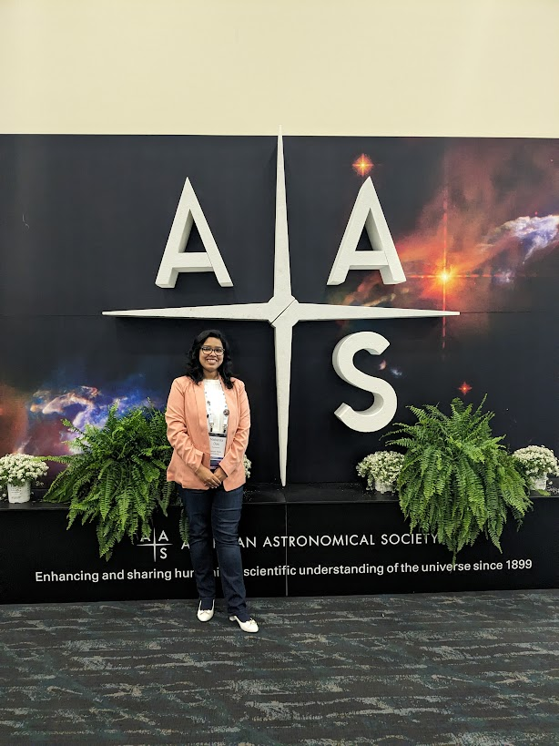
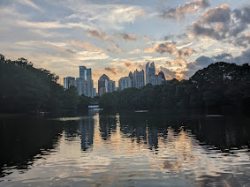
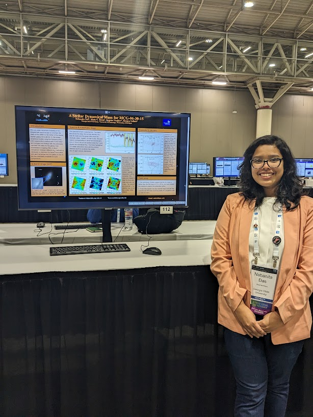

Intro

Hi, This is Nabanita Das (pronounced as: Naw-bo-nee-tha Dha-sh). I am a 5th year graduate student at Georgia State University. I did my Bachelors' and Masters' degree in physics from Presidency University, Kolkata in India. Currently, I work under the advisement of Prof. Misty Bentz. My current research is mass measurements of supermassive black holes in nearby active galaxies.
Apart from astronomy, I spend a lot of my time in cooking and photography. I love to explore new cuisines and try to come up with fusion and quick recipes (read, make a mess in my kitchen). I am a huge summer person and love to take walks when it's bright outside. Below is a photo of Atlanta on a beautiful summer afternoon.

Research

For my first dissertation work, I created dynamical models a nearby Seyfert galaxy MCG--06-30-15, to measure the mass of the central supermassive black hole. I used K-band spatially resolved spectra from SINFONI on the Very Large Telescope (VLT) to extract the stellar kinematics. I created dynamical models using FORSTAND to constrain the dynamics of the galaxy. Our measurement indicated a black hole mass of 50 M solar mass. Read more about the research here.. You can find more details on my research in this iPoster.
Teaching

It won't be an overstatement to say that my teachers have shaped my career.
The only way I know to pay them the due respect is to give away more knowledge.
I have been grateful to have a great opportunity to teach quite a bit during my PhD.
Since 2022, I have taught introductory astronomy labs as the sole instructor
at Georgia State University, covering:
Astronomy 1010 — Astronomy of the Solar System
Class strength: 24 students
Sections taught: 11
Astronomy 1020 — Stellar and Galactic Astronomy
Class strength: 24 students
Sections taught: 4
I learned a lot through these classes and improved my skills as an instructor, especially with teaching non-major students.
As I move forward throughout my career, I aspire to grow as an educator with and work towards making science and education more accessible to everyone.
Some of my students' testimonials can be found here.
For Students
Please find the all the GSU intro astronomy labs here. Resources for final astronomy projets are here.
Contact
Office:
25 Park Place
Cubicle #2
Atlanta, GA 30303
Email:
ndas5@gsu.edu
Outreach
Outreach has been an integral part of my duties since my undergraduate program. I have co-organized and co-hosted several symposiums, and seminars in my college. During COVID (dark era), I co-orgnaized Alumni Lecture Series.
From 2023-2025, I served as the co-President of GSU's Women and Gender Minorities in Physics. I hosted discussion panels focusing on career development of undergraduate women and underrepresented gender groups.
I also invited women professors of our department for informal coffee our with our memebers.
I served as a panelist on the REU professional development panel organized by the department of Physics and astronomy, GSU.
Georgia Outreach Team for Space
From Fall 2025, I have been serving as a graduate lead of
Georgia Outreach Team for Space (GOT Space).
At the same time, I act as the director of communications for all efforts under GOT Space
including Astronomy on tap Atlanta
and Cosmic Conversations. I collaborated with popular media channel Secret Atlanta to feature these events.
Hard Labor Creek Observatory
Georgia State University owns and operates the Hard Labor Creek Observatory in the quiet town of Rutledge, Georgia.
I have volunteered for several public night events where the graduate students and the faculty members
host local public for stargazing and observatory tour. It has been an inspiring experience to talk to
the public and especially young school kids and answer their questions about the space. As a researcher, I
often forget how amazing my job is, and these interactions remind me of that every time.